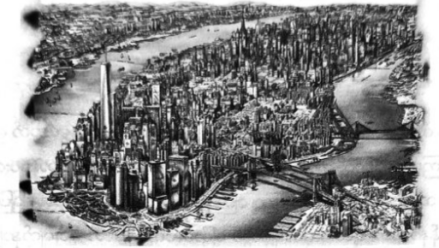

မိတ်ဆွေသစ်အချို့ ဝယ်ယူခြင်း
အိပ်ပျော်နေသော မြို့ကြီးကို မြင်လျှင် ပျော်ရွှင်နေသူဟူ၍ မစ္စအိုလာရီသာ ရှိ၏။ ဟော့ဒေါ့ဆိုင်တစ်ခုလုံးကို ခေါင်းထိုးဝင်ကာ စားနေပြီး ပိုင်ရှင်မှာ ပလက်ဖောင်းပေါ်တွင် လက်မစုပ်ရင်း အိပ်ပျော်နေလေသည်။
အားဂတ်စ်မှာ မျက်လုံးတစ်ရာလုံးဖွင့်လျက် စောင့်ကြည့်နေပြီး ပါစီတို့ကို ထုံးစံအတိုင်း စကားတစ်ခွန်း မပြော ချေ။ လျှာ၌ပါ မျက်လုံးများရှိသဖြင့် စကားမပြောခြင်းဟု ကောလာဟလ သတင်းများ ကြားဖူး၏။ သို့သော် သူ့မျက်နှာ အမူအရာမှာ ကြောက်လန့်နေပုံ ပေါ်၏။ အိုလံပတ်စ်တောင်ပေါ်မှ သတင်းအား ပြောပြပြီး နတ်ဘုရားများ လာမကူ နိုင်ကြောင်း ပါစီ ပြောပြလိုက်သည်။
“သင်တန်းကိုသာ ပြန်ပြီး တတ်နိုင်သရွေ့ စောင့်ရှောက်ပေးပါ ……”
ပါစီ့ကို လက်ညှိုးထိုးပြရင်း မေးခွန်းထုတ်ချင်ရန်ဖြင့် မျက်ခုံးကို ပင့်ပြသည်။
“ကျွန်တော် ဒီမှာ နေခဲ့မယ် …”
ထိုအဖြေကို သဘောကျသွားဟန်ဖြင့် အားဂတ်စ် ခေါင်းညိတ်၏။ ထို့နောက် အန်နာဘတ်ကို ကြည့်ရင်း လေထဲတွင် စက်ဝိုင်းပုံတစ်ပုံ လက်ညှိုးဖြင့် ဝိုင်းပြလိုက်သည်။
“ကောင်းတယ် … အချိန်ကျပြီ”
“ဘာကိုလဲ …”
ပါစီ မမေးဘဲ မနေနိုင်။ ဗန်ကား အနောက်ဘက်ခန်းကို မွှေနှောက် ရှာဖွေရင်း ကြေးဒိုင်းတစ်ခုကို အားဂတ်စ် ထုတ်ယူလာကာ အန်နာဘတ်အား ပေးလိုက်သည်။ သင်တန်းတွင် ပုံမှန်သုံးနေကျ ကြေးဒိုင်းအဝိုင်းမျိုးပင် ဖြစ်သည်။ မြေပြင် ပေါ်သို့ အန်နာဘတ် ချထားလိုက်ချိန်တွင် ပြောင်လက်နေသော ဒိုင်းမျက်နှာပြင်၌ လစ်ဘာတီရုပ်ကြီးနားရှိ အဆောက်အအုံများကို မိုးပေါ်မှ စီးလျက်မြင်ရသော မြင်ကွင်းမျိုး ပေါ်လာ၏။ ပြောရလျှင် မနီးလှသောနေရာ ဖြစ်သည်။
“ဟာ … ဗီဒီယိုဒိုင်းပါလား …”
“ဒေးဒဲလ်လပ်စ်ရဲ့ အကြံဉာဏ်တစ်ခုပဲ … ဘက်ကင်ဒေါ့ဖ် … အဲ … သူ့ကို လုပ်ခိုင်းခဲ့တာ … ဒီဒိုင်းက နေရောင် ဒါမှမဟုတ် လရောင်ကို ရောင်ပြန်ဟပ်ပြီး တစ်ကမ္ဘာလုံးကို ပြပေးနိုင်တယ်။ နေရောင်အောက် လရောင်အောက်မှာ ရှိတဲ့ ဘယ်သူ့ကိုမဆို ကြည့်လို့ရတယ်… သဘာ၀ အလင်းရောင်နဲ့ ထိနေဖို့ပဲ လိုတယ် … ဒီမှာကြည့် …”
အန်နာဘတ် ဘေးတွင် ဝိုင်းဖွဲ့လိုက်ကြပြီး ပထမပိုင်းတွင် ပုံရိပ်များမှာ အလွန် မြန်ဆန်စွာ ရွေ့လျားနေသဖြင့် ကြည့်ရသည်ကပင် အန်ချင်လာမိသည်။
“ဟိုမှာ … ဟိုနားကို ချဲ့ ကြည့် …”
ကော်နာစတိုလ်က ဆို၏။ အန်နာဘတ်က စိတ်လှုပ်ရှားစွာဖြင့် မေးလိုက်သည်။
“ဘာလဲ … ရန်သူတွေ ၀င်လာကြပြီလား”
“ဒီမှာလေ… သကြားလုံးဆိုင် … တံခါး ဖွင့်ထားတယ် … အားလုံးလည်း အိပ်ပျော်နေကြတယ် … ကဲ … ဘာလို သေးလဲ”
“ကော်နာ …”
ကေတီဂါဒ်နာက လှမ်းဆူလိုက်သည်။ သူမ၏ အသံမှာ အမေဖြစ်သူ ဒီမီတာ နှင့် တူလှ၏။
“ဒါ အရေးကြီးတဲ့ကိစ္စ ဆွေးနွေးနေတာ … စစ်ပွဲထဲမှာ ဘယ်သကြားလုံးဆိုင် မှ ဝင်ခိုးစရာမလိုဘူး …”
“ဆောရီး”
တောင်းပန်လိုက်သော်လည်း ကော်နာ့ပုံမှာ နည်းနည်းလေးမှ နောင်တ ရဟန် မရှိ။
“ဒီဒိုင်းနဲ့ဆို တစ်မြို့လုံးကို စောင့်ကြည့်လို့ရပြီ … ကျေးဇူးပဲ အားဂတ်စ် … တစ်နေ့တော့ သင်တန်းမှာ ပြန်တွေ့ ကြမယ် လို့ မျှော်လင့်ပါတယ် ..”
အားဂတ်စ်နှင့် ဟားပီးစ်နှစ်ကောင် မောင်းသော ကားသုံးစီးမှာ ရပ်နေသော ကားများကြားမှ ကွေ့ပတ် မောင်းလျက် ပြန်ထွက်သွားကြသည်။ ပါစီ လေချွန်လိုက်လျှင် အနီးသို့ မစ္စအိုလာရီ ခုန်ပေါက်လျက် ရောက်လာ၏။
“ပန်းခြံထဲမှာ တွေ့ခဲ့တဲ့ ဂရိုဗာ့ကို မှတ်မိလား … ဆေတာဂရိုဗာလေ …”
“ဝုတ်”
သိတယ်ဟု ဖြေခြင်းဖြစ်ပါစေဟု ပါစီ မျှော်လင့်မိသည်။
“သူ့ကို သွားရှာခဲ့ … မအိပ်စေနဲ့ … သွားရှာ… ဂရိုဗာ့ကို သွားရှာ … သိပြီလား …”
မလိုအပ်ဘဲနှင့် ပါစီကို တစ်ချက်နမ်းပြီးမှ မစ္စအိုလာရီ မြောက်ဘက်သို့ ပြေးထွက်သွားသည်။ အိပ်ပျော်နေသော ရဲသားကိုကြည့်ရင်း ပေါ်လပ်က မေးလိုက်သည်။
“ငါ နားမလည်တာ တစ်ခုရှိတယ် … လူတွေအကုန် အိပ်ပျော်နေပေမဲ့ ငါတို့ကျ အိပ်မပျော်ပါ့လား …”
“ဒီမှော်ပညာက တစ်မြို့လုံးကို သက်ရောက်နေတာ … ဧရိယာကျယ်လေ ခုခံရတာ လွယ်လေပဲ … လူတွေ သန်းချီ အိပ်ပျော်နေဖို့ဆို မှော်ပညာ အများကြီး သုံးနိုင်မှာ မဟုတ်ဘူး … ငါတို့လို နတ်သွေးနှောတဲ့သူတွေ အိပ်အောင်ဆို မှော်ပညာ များများ ပိုလိုလိမ့်မယ် …”
ဆီလီနာဗြူရီဂတ်က ဝင်ဖြေသဖြင့် ပါစီ တအံ့တဩ မေးလိုက်မိသည်။
“မှော်ပညာအကြောင်း ဘယ်တုန်းက လေ့လာလိုက်တာလဲ …”
ဆီလီနာ မျက်နှာနီသွား၏။
“အဝတ်အစားလဲဖို့ပဲ တစ်ချိန်လုံး စိတ်ဝင်စားနေတာမှ မဟုတ်တာ …”
ဒိုင်းကို ကြည့်နေသော အန်နာဘတ်က လှမ်းခေါ်၏။
“ပါစီ .. ဒီမှာ လာကြည့်စမ်း”
လောင်းအိုက်စ်လန် ရေတိမ်နေရာကို ဒိုင်းမှတစ်ဆင့် မြင်နေရပြီး မော်တော်ဘုတ် တစ်ဒါဇင်ခန့်မှာ မန်ဟက်တန် ဆီ ဦးတည်လာနေ၏။ မော်တော်ဘုတ်တိုင်းတွင် ချပ်ဝတ်တန်ဆာအပြည့်နှင့် နတ်သွေးနှောသူများ ပါလာကြပြီး အနက်ရောင် တံစဉ်ပုံ ပါသော ပန်းရောင်အလံကို လွှင့်ထူထားကြသည်။ ထိုအလံကို တစ်ခါမှ မမြင်ဖူးသော်လည်း ခရိုနော့စ်၏ အလံမှန်း သိရန်မခက်ချေ။
“ကျွန်းပတ်ပတ်လည်ကို မြန်မြန်စစ်စမ်းပါ …”
တောင်ဘက်သို့ အန်နာဘတ် ပြောင်းကြည့်လိုက်လျှင် စတေတန်ကျွန်း ဖယ်ရီပေါ်၌ ဒရာကာနေးနှင့် ငရဲခွေး များစွာကို တွေ့ရပြန်သည်။ သင်္ဘောရှေ့မှ ရေကူးလာသော သတ္တဝါများကို တွေ့ရပြီး ရုတ်တရက် ကြည့်ပါက လင်းပိုင်များ ဟု ထင်ရသည်။ သို့သော် သေချာကြည့်လျှင် ခွေးနှင့် တူလှသော မျက်နှာများရှိကာ ခါးတွင် ဓားများ ချည်ထားကြပြီး ပင်လယ်မိစ္ဆာ တယ်လီခိုင်းများ ဖြစ်နေ၏။
ဂျာဆီကမ်းခြေ၊ လင်ကွန်းလိုဏ်ခေါင်းအဝင်ဝ၌လည်း မိစ္ဆာတစ်ရာခန့် ချီတက်လာနေပြီး ဘီလူးများ၊ ဆိုက်ကလော့များ၊ နဂါးများ အပါအဝင် ဒုတိယ ကမ္ဘာ စစ်လက်ကျန် ရှာမန်းတင့်ကားတစ်စီးပါ ကားများကို တွန်းဖယ်ရင်း ချီတက်လာ နေသည်။
“နေပါဦး … မန်ဟက်တန် အပြင်မှာရော ဘာတွေဖြစ်ကုန်ပြီလဲ … တစ်တိုင်းပြည်လုံး အိပ်ပျော်ကုန်ကြပြီလား …”
အန်နာဘတ် မျက်နှာကုတ်သွားရင်း …
“မဖြစ်နိုင်ဘူး … ဒါပေမဲ့ ထူးတော့ထူးတယ် … ဒီပုံတွေ ကြည့်ရသမျှ မန်ဟက်တန်ကျွန်း တစ်ခုလုံး အိပ်ပျော် နေတယ် … ကျွန်းရဲ့ပတ်ပတ်လည် မိုင်ငါးဆယ် ဝန်းကျင်မှာကျ အချိန်ကာလက အရမ်းကို နှေးနေတယ် … မန်ဟက်တန်နဲ့ နီးလာလေ … ပိုနှေးလာလေပဲ …”
နယူးဂျာဆီ အဝေးပြေးလမ်းမကြီး မြင်ကွင်းကို အန်နာဘတ် ပြ၏။ စနေည နေပိုင်းဖြစ်သဖြင့် ရုံးဖွင့်ရက် များလောက် ယာဉ်ကြောပိတ်ဆို့မှု အခြေအနေမဆိုး။ ယာဉ်မောင်းများမှာလည်း နိုးနိုးကြားကြားပင် ရှိနေကြသည်။ သို့သော် ကားများမှာ တစ်နာရီ တစ်မိုင်ထက် ပိုမရွေ့ကြ။ ကောင်းကင်ရှိ ငှက်များမှာလည်း အနှေးပြ ကွက်သဖွယ် ပျံသန်း နေ၏။
“ခရိုနော့စ်လက်ချက်ပဲ … အချိန်ကို နှေးပစ်ထားတာ”
ကေတီဂါဒ်နာက ပါစီ့စကားကို ထောက်ခံ၏။
“ဟီကိတ်ပါ ဝင်ကူနေပုံပဲ … မန်ဟက်တန်ဘက်ကို ဘယ်ကားမှ မလာကြဘူး … အလိုလို ကွေ့ရှောင် သွားကြတယ်”
အန်နာဘတ်မှာ အလွန်စိတ်ပျက်နေဟန် ရှိသည်။ တိတိကျကျ မသိနိုင်သောကိစ္စများကို သူမ မုန်းတတ်၏။
“ဘာမှ သေချာမပြောနိုင်ဘူး … သေချာတာက မန်ဟက်တန်ကို မှော်ပညာ အဆင့်ဆင့်နဲ့ ကာထားတယ် … ဒီမှာ တစ်ခုခု ဖြစ်နေပြီဆိုတာ အပြင်ကမ္ဘာက လူတွေ မသိနိုင်ဘူး … မန်ဟက်တန်ကို လာသမျှ လူတွေလည်း အကုန်နှေးကုန် ကြတော့ ဘာဖြစ်နေသလဲ မသိနိုင်တော့ဘူး ……”
“ပင့်ကူအိမ်မှာ ငြိနေတဲ့ ယင်ကောင်တွေလိုပဲ …”
ဂျိတ်မေဆန်၏ စကားကို အန်နာဘတ်က ခေါင်းညိတ် ထောက်ခံလိုက်သည်။
“ငါတို့ ဘယ်စစ်ကူမှ မျှော်နေလို့ မရဘူး …”
ပါစီ သူငယ်ချင်းများအားလုံး အံ့အားသင့်နေကြသလို ကြောက်နေကြဟန် ရှိကြပြီး သူတို့အပြစ်လည်း မဟုတ်။ ဒိုင်းထဲမှ မြင်ကွင်းအရ အနည်းဆုံး ရန်သူ သုံးရာ ကျူးကျော် ဝင်ရောက်လာပြီး ပါစီတို့တွင် ခုခံရန် အင်အားလေးဆယ် သာ ရှိ၏။ စစ်ကူလည်း ရောက်မလာနိုင်။
“ကောင်းပြီ … ငါတို့ မန်ဟက်တန်ကို ကာကွယ်ကြမယ်”
ဆီလီနာက စိတ်မသက်သာဟန်ဖြင့် ...
“ပါစီ … မန်ဟက်တန်က အကျယ်ကြီးနော် …”
“ဘယ်လိုပဲဖြစ်ဖြစ် ရအောင် ကာကွယ်မှ ဖြစ်မယ် …”
အန်နာဘတ်က ထိုအကြံကို ထောက်ခံသည်။
“ပါစီ ပြောတာ အမှန်ပဲ … လေနတ်ဘုရားတွေကြောင့် ခရိုနော့စ်ရဲ့ စစ်တပ်ကြီး လေထဲက ရောက်မလာနိုင်ဘူး … တိုက်ခိုက်မယ်ဆို မြေပြင်ကပဲ ချီတက်လာလိမ့်မယ် … ဒီတော့ ကျွန်းရဲ့ ဝင်ပေါက်တွေကို ငါတို့ ပိတ်ထားကြမယ် …”
“သူတို့မှာ မော်တော်ဘုတ်တွေ ရှိတယ် …”
မိုက်ကယ်ယူးက ဟာကွက်ကို ထောက်ပြ၏။ ထိုအခိုက်မှာပင် ခေါင်းထဲ၌ လျှပ်စီးလက်သလို လင်းသွားပြီး အက်သီနာ ပေးသော ‘မြစ်တွေကို သတိရပါ’ ဟူသည့် အကြံဉာဏ်အား နားလည်လာခဲ့သည်။
“မော်တော်ဘုတ်တွေ ငါ့တာဝန်ထားလိုက် ….”
မိုက်ကယ် မျက်မှောင်ကုတ်သွားရင်း …
“ဘယ်လို လုပ်မှာလဲ ……”
“ငါ့တာဝန်ထားစမ်းပါ … တံတားတွေ၊ လိုဏ်ခေါင်းတွေကို စောင့်ကြည့်ရမယ် … အင်ပါယာစတိတ် အဆောက် အအုံဆီ တိုက်ရိုက်လာနိုင်တဲ့ လမ်းတွေကို အဓိက စောင့်ကြည့်ရမယ် … မိုက်ကယ်နဲ့ အပိုလို အဆောင်သားတွေက ဝီလီယံ ဘတ်ခ်တံတားကို စောင့်ကြ… ကေတီ… ဒီမီတာအဆောင်က ဘရွတ်ကလင်း ဘက်ထရီ လိုဏ်ခေါင်းကို စောင့်မယ် … လိုဏ်ခေါင်းထဲမှာ အဆိပ်ပင်တွေ ဆူးပင်တွေ စိုက်ကြ… သူတို့ ဝင်မလာနိုင်အောင် နည်းမျိုးစုံသုံးပြီး တားကြ… ကော်နာ … ဟားမီးစ်အဆောင် အင်အားတစ်ဝက်နဲ့ မန်ဟက်တန်တံတားကို ပိတ်ထား … ထရာဗစ် … ကျန်တဲ့ တစ်ဝက်အင်အားနဲ့ ဘရွတ်ကလင်း တံတားကို ပိတ်ထား … လမ်းမှာ ခိုးဖို့ ဝှက်ဖို့ လုံးဝမရပ်ရဘူး”
“ဟား ..”
ဟားမီးစ်အဆောင် တစ်ခုလုံးဆီမှ ညည်းသံများ ထွက်လာသည်။
“ဆီလီနာ … အဖရိုဒိုက်အဆောင်နဲ့ … ကွင်းမစ်တောင် လိုဏ်ခေါင်းကိုသွား ”
ဆီလီနာ၏ ညီမတစ်ယောက်ဆီမှ အသံထွက်လာ၏။
“ဘုရားရေ … လမ်းမှာ ရေမွှေးနဲ့ ဖက်ရှင်ဆိုင်တွေ ရှိတယ် … မိစ္ဆာတွေ ရေမွှေးနံ့ကို ကြိုက်မယ် မထင်ဘူး ...”
“လျှောက်မဝင်နေကြနဲ့… အဲ … ရေမွှေးနံ့က အလုပ်ဖြစ်မယ် ဆိုရင်တော့ သဘောပဲ …” အဖရိုဒိုက် အဆောင်သူ ခြောက်ယောက်က ဝမ်းသာအားရဖြင့် ပါစီ့ပါးကို ဝိုင်းနမ်းသွားကြသည်။
“တော်ပြီ … တော်ပြီ ..”
မျက်စိမှိတ်ရင်း မည်သည့်လမ်းကို မေ့ထားခဲ့မိသလဲ ပါစီ စဉ်းစားလိုက်သည်။
“ဟော်လန်လိုဏ်ခေါင်း ရှိသေးတယ် … ဟတ်ဖီးယားတပ်စ် အဆောင်နဲ့ အဲဒီကိုသွား ဂျိတ် … ဂရိမီးဗုံးနဲ့ ထောင်ချောက်တွေ ထောင်ထား … ရှိသမျှ လက်နက် အကုန်သာသုံး …”
ဂျိတ်က ပြုံးလိုက်ရင်း …
“စိတ်ချ … ဘက်ကင်ဒေါ့ဖ်အတွက် ကောင်းကောင်း အကြွေး ပြန်ဆပ်ချင်နေတာ …”
ဟတ်ဖီးယားတပ်စ် အဆောင်တစ်ခုလုံး အားပါးတရ ထောက်ခံကြ၏။
“ငါးဆယ့်ကိုးလမ်း တံတား … ကလဲရစ် …”
ပါစီ စကားမဆက်နိုင်။ ကလဲရစ် ပါမလာခဲ့။ အေးရီးစ် အဆောင်တစ်ခုလုံး သင်တန်း၌ ကျန်ရစ်၏။ ပါစီ အရှက် မကွဲခင် အန်နာဘတ်က ဝင်ကယ်လိုက်သည်။
“ငါတို့ တာဝန်ထားလိုက် … မဲလ်ကွန် … အက်သီနာအဆောင်ကို ဦးဆောင်သွား … လမ်းတစ်လျှောက်မှာ အစီ အမံ နှစ်ဆယ်သုံးကို စခဲ့ကြ … နင့်ကို ငါပြဖူးတဲ့ အတိုင်းပဲ … အဲဒီနေရာကို သေချာ ကာကွယ်ကြ …”
“စိတ်ချ ..”
“ငါက ပါစီနဲ့ အတူတူ ရှိမယ် … ပြီးရင် နင်တို့ဆီ … ဒါမှမဟုတ် စစ်ကူလိုတဲ့ နေရာတိုင်းကို ငါတို့ လာခဲ့မယ် …”
နောက်ဘက်နားမှ တစ်ယောက်က လှမ်းပြော၏။
“နှစ်ယောက်တည်း လျှောက်လည်မနေကြနဲ့ဦး”
တခွိခွိ ရယ်သံအချို့ကို ကြားရသော်လည်း ပြန်ပြောနေရန် အချိန်မရှိပေ။
“ကောင်းပြီ … လိုအပ်ရင် ဖုန်းလှမ်းဆက်ကြ”
“ငါတို့မှာ ဖုန်းမှ မရှိတာ ..”
အိပ်ပျော်နေသော မိန်းမကြီးတစ်ယောက်၏ လက်ထဲမှ ဘလက်ဘယ်ရီ ဖုန်းကိုယူရင်း ဆီလီနာကို ပါစီ လှမ်းပေး လိုက်သည်။
“ရော့ … ဖုန်း … အန်နာဘတ် ဖုန်းနံပါတ်ကို သိကြတာပဲဟာ … ငါတို့ဆီ ဆက်သွယ်ချင်ရင် ကြုံရာဖုန်းနဲ့ ကောက်ဆက်ကြ … တစ်ခါပဲသုံးပြီး ပြန်ထားခဲ့ … လိုအပ်မှ နောက်ဖုန်းတစ်လုံး ငှားသုံးကြ … ဒီလိုဆို နင်တို့နေရာကို မိစ္ဆာတွေ တိတိကျကျ သိဖို့ ခက်သွားလိမ့်မယ်”
ပါစီ့ အကြံအစည်ကို အားလုံး သဘောကျဟန်ဖြင့် ပြုံးနေကြသည်။
ထရာဗစ်က ချောင်းဟန့်ရင်း …
“ဖုန်းကောင်းကောင်း တွေ့ရင်ကော …”
“ဟင့်အင်း … ပြန်ထားခဲ့ …”
“ဟာကွာ ..”
ဂျိတ်မေဆန်က …
“နေဦး … ပါစီ … လင်ကွန်း လိုဏ်ခေါင်းတစ်ခု ကျန်သေးတယ်”
လင်ကွန်း လိုဏ်ခေါင်းထဲသို့ ရှာမန်းတင့်ကားနှင့် မိစ္ဆာတစ်ရာ ချီတက်လာနေပြီး ခုခံရန် လူလေးဆယ်၌ တစ်ယောက်မှ မပိုတော့။ ထိုအခိုက်မှာပင် လမ်းတစ်ဖက်မှ လှမ်းပြောလိုက်သော မိန်းကလေးတစ်ယောက်၏ အသံကို ကြားလိုက်ရသည်။
“ငါတို့တာဝန် ထားလိုက်”
ထိုစကားသံကို ကြားရသည်က ပါစီ့ တစ်သက်တွင် အပျော်ဆုံးပင်။ မိန်းကလေးငယ်ငယ် သုံးဆယ်ခန့်ပါသော အဖွဲ့ ဖြစ်ပြီး အဖြူရောင်အင်္ကျီ၊ ငွေရောင် ဘောင်းဘီနှင့် ဘွတ်ဖိနပ်များ ဝတ်ထားကြသည်။ ခါးတွင် ဓားကို ချိတ်ထား ကြပြီး ကျောတွင် မြားကျည်ထောက်နှင့် လေးကို လွယ်ထားကြသည်။ သူတို့ကြားထဲတွင် သွားလာနေသော အဖြူရောင် ဝံပုလွေများကို တွေ့ရပြီး အများစု၏ လက်မောင်းများ ပေါ်၌ အမဲလိုက် သိမ်းငှက်များ ပါလာကြသည်။
ရှေ့ဆုံးမှ ဦးဆောင်လာသော မိန်းကလေးမှာ အနက်ရောင်ဆံပင် ရှိကာ ဆံပင်ကို ထောင်ထားပြီး အနက်ရောင် သားရေဂျာကင်ကို ဝတ်ထား၏။ ခေါင်းပေါ် တွင် ငွေရောင်ကွင်း တစ်ခုကို သရဖူပမာ စွပ်ထားပြီး နားတွင် လူခေါင်းခွံပုံ နားဆွဲ ကို ဆွဲထား၏။
“တာလီယာ …”
ဇုစ်၏သမီး တာလီယာက အန်နာဘတ်ကို ပြုံးပြရင်း ...
“အာတီးမစ်ရဲ့ အမဲလိုက်အဖွဲ့ … ခုခံဖို့ တာဝန်ယူပါတယ်”
တာလီယာမှာ အားလုံးနှင့် ရင်းနှီးသော်လည်း ကျန်မိန်းကလေးများမှာ ယောက်ျားလေးများကို ဝေးဝေးရှောင် ကြ၏။ မြားနှင့် မပစ်သည်ကပင် အတော်ကြီး အခြေအနေ ကောင်းနေခြင်း ဖြစ်၏။ တာလီယာကို ပါစီ လှမ်းမေးလိုက် သည်။
“ပြီးခဲ့တဲ့ တစ်နှစ်လုံး နင် ဘယ်ပျောက်နေတာလဲ … နင်တို့အဖွဲ့ဝင် နှစ်ဆလောက် တိုးလာပါ့လား …”
“ပြောရရင် အရှည်ကြီးပဲ .. ငါ့ စွန့်စားခန်းတွေက နင့်ထက် ပိုအန္တရာယ်များလိမ့်မယ် ဂျက်ဆန် …”
“ပေါက်ကရတွေပါဟာ …”
“ကြည့်သေးတာပေါ့ … ဒီကိစ္စတွေပြီးရင် နင်ရယ် ငါရယ် အန်နာဘတ်ရယ် ငါးဆယ့်ခုနစ်လမ်း အနောက်က ဘာဂါနဲ့ အာလူးကြော် သွားစားရအောင် …”
“သွားတာပေါ့ … ကျေးဇူးပဲ တာလီယာ …”
“မိစ္ဆာတွေ ငါ့တာဝန်ထားလိုက် … အမဲလိုက်အဖွဲ့ … သွားကြစို့ …”
လက်မှ ငွေကြိုးကို တာလီယာ ပုတ်လိုက်လျှင် အီးဂျစ်ဒိုင်းဖြစ်လာပြီး ဒိုင်းအလယ်ရှိ ရွှေရောင်မီဒူဆာ ခေါင်း ပုံစံမှာ အလွန်ကြောက်စရာ ကောင်းသဖြင့် သင်တန်းသားများ နောက်သို့ ရှဲသွားကြသည်။ အမဲလိုက်အဖွဲ့ဝင်များ နောက်မှ ဝံပုလွေများ၊ သိမ်းငှက်ကြီးများ လိုက်သွားကြပြီး လောလောဆယ် လင်ကွန်းလိုဏ်ခေါင်းကို ပါစီ စိတ်ချထားလိုက်သည်။
“တော်သေးတာပေါ့ … ဒါပေမဲ့ မြစ်ထဲက လာသမျှ မော်တော်ဘုတ်တွေကို မတားနိုင်ရင် တံတားနဲ့ လိုဏ်ခေါင်း တွေကို ကာကွယ်ထားသမျှ အလကားပဲ …”
“နင် ပြောတာ အမှန်ပဲ …”
သင်တန်းသားအားလုံး ပြုံးနေကြပြီး စိတ်ဓာတ် တက်ကြွနေကြသည်။ အားလုံးကို အတူတကွ မြင်ရသည်မှာ နောက်ဆုံး ဖြစ်နိုင်သည်ဟူသော အတွေးကို ပါစီ ကြိုးစား မေ့ပျောက်ထား၏။
“မင်းတို့က ဒီရာစုနှစ်ရဲ့ အကြီးကျယ်ဆုံး သူရဲကောင်းတွေပဲ … မိစ္ဆာ ဘယ်လောက်ပဲ လာပါစေ … ရဲရဲရင့်ရင့် ရင်ဆိုင်မယ်ဆို ငါတို့ပဲ နိုင်ရမယ် …”
လှိုင်းခွဲဓားကို မြှောက်ရင်း ပါစီ အော်ပြောလိုက်သည်။
“အိုလံပတ်စ်အတွက် …”
လူလေးဆယ်လုံး အော်ဟစ်သံမှာ မန်ဟက်တန်မြို့လယ်၌ ပဲ့တင်ထပ်သွား၏။ ထို ခဏလေးတွင် ရဲရင့်ဟန် ရှိသော်လည်း ချက်ချင်းလိုလို တိတ်ဆိတ်နေသော မြို့ကြီးထဲတွင် တိမ်မြုပ်သွားခဲ့သည်။
ပါစီနှင့် အန်နာဘတ်တို့ ကားတစ်စီး ရွေးသင့်သော်လည်း ကားများ ပိတ်ဆို့ နေသလို မည်သည့်ကားမှ စက်နိုး မနေကြောင်း တွေ့ရသည်။ ယာဉ်မောင်း အိပ်မပျော်ခင် စက်ရပ်ခဲ့သလား၊ မော်ဖီးယပ်စ်၏ အစွမ်းကြောင့် ကားအင်ဂျင် များပါ အိပ်ပျော်ကုန်ကြသလား ဝေခွဲမရ။ ယာဉ်မောင်းအများစုမှာ အိပ်ပျော်ခါနီးတွင် ကားကို လမ်းဘေးထိုးချရပ်ရန် ကြိုးစားကြသော်လည်း လမ်းမှာ လုံးဝပိတ်ဆို့နေသည်သာ ဖြစ်၏။ နောက်ဆုံးတွင် ပိုင်ရှင်အိပ်ပျော်နေသော စကူတာ တစ်စီးအား တွေ့ကြရသည်။
“ဆောရီး …”
ကံကောင်းလျှင် စကူတာကို ပါစီ ပြန်လာ ပို့ပေးနိုင်ပေလိမ့်မည်။ ပါစီ ပြန် ရောက်မလာနိုင်ပါကလည်း တစ်မြို့လုံး ဖျက်ဆီးခံရမည်ဖြစ်ရာ စကူတာကိစ္စ စဉ်းစားနေစရာ လိုတော့မည် မဟုတ်။
ပါစီ့ ခါးကိုဖက်လျက် အန်နာဘတ် ပါလာပြီး တိတ်ဆိတ်နေသော မြို့ကြီးထဲတွင် သူတို့ စကူတာ အင်ဂျင်သံ ကိုသာ ကြားရ၏။ ထူးထူးခြားခြားအနေဖြင့် ဖုန်းမြည်သံများ တစ်ချက်တစ်ချက် ကြားနေရသည်။ ခရီးက ထင်သလောက် မတွင်။ ကားရှေ့တွင် အိပ်ပျော်နေသော လမ်းသွားများကို မြင်လျှင် ဘေးလွတ်ရာသို့ ရွှေ့ပေးနေရသည်။ မီးလောင်နေသော ဆိုင်လေးတစ်ဆိုင်ကိုလည်း မီးသတ်ပေးခဲ့ရ၏။ လမ်းပေါ်တွင် ဘီးလှိမ့်သွားနေသော ကလေးလက်တွန်းလှည်းကို ကယ်ခဲ့ ကြသော်လည်း အတွင်းတွင် ခွေးလေးတစ်ကောင်သာ အိပ်လျက်ပါလာခဲ့သည်။ မက်ဒီဆန် စကွဲ ပန်းခြံကို ဖြတ်လာချိန် တွင် အန်နာဘတ်က ပြော၏။
“ရပ်ဦး …”
စကူတာ ရပ်လိုက်သည်နှင့် အန်နာဘတ် ပန်းခြံထဲ ပြေးဝင်သွားသည်။ ပါစီ နောက်မှလိုက်ခဲ့သောအခါ အနီရောင် ကျောက်ခုံပေါ်ရှိ ကြေးဝါရုပ်တစ်ရုပ်ကို အန်နာဘတ် ငေးကြည့်နေ၏။ ဤနေရာကို ပါစီ အကြိမ်များစွာ ဖြတ်သွားခဲ့ဖူး သော်လည်း ဤရုပ်တုကို သေသေချာချာ တစ်ခါမှ မကြည့်ခဲ့ဖူး။
ရုပ်တုမှာ ထိုင်ခုံပေါ်တွင် ဒူးချိတ်လျက် ထိုင်နေသည်။ ရှေးခေတ်ဝတ်စုံကို အေဗရာဟင် လင်ကွန်းစတိုင် ဝတ်ထားပြီး သူ့ထိုင်ခုံအောက်တွင် ကြေးဝါစာအုပ် ပုံကြီးကို တွေ့ရ၏။ လက်တစ်ဖက်တွင် ငှက်မွေးကလောင်ကို ကိုင်ထားပြီး သတ္တု စက္ကူပြားကြီးကို တစ်ဖက်တွင် ကိုင်ထားသည်။
ကျောက်ခုံပေါ်မှ ရေးထားသော စာကို ပါစီ ကြိုးစားဖတ်ရင်း ……
“နေပါဦး … ဝီလီယံ အိပ်ချ် စတီဝါဒ် အကြောင်း လာလေ့လာတာလား …”
“ဆီဝါဒ်ပါဟဲ့ … နယူးယော့ခ်အစိုးရအဖွဲ့ ခေါင်းဆောင် … ဟီသီရဲ့သား …… နတ်သွေးနှောတယ် … ဒါက အရေး မကြီးပါဘူး… ဂရုစိုက်ဖို့ လိုတာက ရုပ်တုပဲ …”
ခုံတန်းရှည်ပေါ်တက်ကာ ရုပ်တု အောက်ခြေအား အန်နာဘတ် လေ့လာနေ၏။
“နေပါဦး … ဒါက စက္ကောမရုပ်လား …”
အန်နာဘတ် ပြုံးလိုက်ရင်း …
“မြို့ထဲက ရုပ်တုအများစုက စက္ကောမရုပ်တွေချည်းပဲ … ဒေးဒဲလ်လပ်စ်က သူ့အတွက် စစ်တပ်ကြီး လိုရင် ရအောင် လုပ်ထားခဲ့တာ”
“အိုလံပတ်စ်ကို ကာကွယ်ဖို့လား … တိုက်ခိုက်ဖို့လား …”
“တစ်ခုခုတော့ ဖြစ်မှာပေါ့ … အစီအစဉ် နှစ်ဆယ့်သုံး ဆိုတာ အဲဒါပဲ … ရုပ်တု တစ်ခုကို စက်ဖွင့်လိုက်တာနဲ့ ကျန်တဲ့ စက္ကောမရုပ်တွေကို အဲဒီအရုပ်က ဆက်ဖွင့်ပေးသွားလိမ့်မယ် … ဒါဆို စစ်တပ်ကြီး ဖြစ်လာလိမ့်မယ် … အန္တရာယ် ကလည်း မသေးတော့ မသေးဘူး … စက္ကောမရုပ်တွေ ဘာလုပ်မယ်ဆိုတာ တွက်ရခက်တယ်”
စက္ကောမရုပ်များနှင့် တွေ့ခဲ့သမျှ အတွေ့အကြုံအရ အဆိုးက များနေသည်။
“နင် တကယ် စက်ဖွင့်တော့မလို့လား …”
“ဒေးဒဲလ်လပ်စ်ရဲ့ မှတ်စု ငါ့မှာ ရှိတယ် … ဟော … ဒီမှာ …”
ဆီဝါဒ်၏ ဖိနပ်ထိပ်ကို အန်နာဘတ် ဖိနှိပ်လိုက်လျှင် ရုပ်တုမှာ ငှက်မွှေးက လောင်နှင့် စက္ကူချပ်ကြီးကို အသင့် ပြင်ရင်း ထလာ၏။
“နေပါဦး … သူက ဘာလုပ်မလို့လဲ … မှတ်စု ယူမှာလား”
“ရှူး … တိုးတိုး ဟဲ့ …”
အန်နာဘတ်က ပါစီကို တားရင်း စကားဆက်သည်။
“ဟယ်လို … ဝီလီယံ ….”
“ဘီလ်လို့ ခေါ်လေ …”
“ဘီလ် … နင့် ပါးစပ်ပိတ်ထား ပါစီ ….”
ရုပ်တုက သတ္တု မျက်လုံးပြောင်များနှင့် ပါစီတို့ကို လှမ်းကြည့်လာသည်။
အန်နာဘတ် ချောင်းဟန့်ရင်း ..
“ဟယ်လို .. ဆီဝါဒ် … အမိန့် … ဒေးဒဲလ်လပ်စ် နှစ်ဆယ့်သုံး … မန်ဟက်တန်ကို ကာကွယ်ပါ … အခုစတော့ ….”
စင်မြင့်ပေါ်မှ ဆီဝါဒ် ခုန်ချလိုက်ရာ ပလက်ဖောင်းပင် ကွဲအက်သွားခဲ့သည်။ ထို့နောက် အရှေ့အရပ်သို့ ဦးတည် လျှောက်သွား၏။
“ကွန်ဖြူးရှပ်ကို သွားနှိုးမလို့နဲ့ တူတယ် …”
အန်နာဘတ်က ခန့်မှန်းနေသည်။
“ဘယ်လို …”
“ဒီနားမှာရှိတဲ့ နောက်ထပ် စက္ကောမရုပ်လေ … အားလုံး နိုးလာတဲ့အထိ လက်ဆင့်ကမ်းပြီး လုပ်ကြလိမ့်မယ်”
“ပြီးတော့ရော ….”
“မန်ဟက်တန်ကို ကာကွယ်ကြလိမ့်မယ်လို့ မျှော်လင့်ရတာပဲ”
“ငါတို့ကိုရော မိတ်ဆွေလို့ သိရဲ့လား …”
“သိမယ် ထင်တာပဲ …”
“အားတက်စရာပဲ …”
နယူးယော့ခ်ရှိ အဆောက်အအုံ၊ ပန်းခြံ၊ ကုန်တိုက်ကြီးများမှ ကြေးရုပ်များ အားလုံးကို ပါစီ စဉ်းစားကြည့်မိသည်။ ရာချီထောင်ချီ ရှိနေနိုင်၏။ ထိုအခိုက်မှာပင် အစိမ်းရောင်မီးတစ်ခု ပေါက်ကွဲသွားပြီး အိစ်မြစ်နေရာမှ ဖြစ်သည်။
“မြန်မြန် သွားမှဖြစ်မယ် …”
စကူတာကို ဘက်ထရီပန်းခြံ၌ ရပ်ထားခဲ့ကြပြီး မန်ဟက်တန်၏ အောက်ဘက်ပိုင်း ဖြစ်ကာ ဟဒ်ဆန်နှင့် အိစ်မြစ် တို့ ပေါင်းစုံကာ ပင်လယ်အော်ထဲသို့ စီးဝင်သော နေရာ ဖြစ်၏။
“ဒီမှာစောင့်နေ ……”
“ပါစီ … နင် တစ်ယောက်တည်း မသွားသင့်ဘူး”
“နင် ရေအောက်မှာ အသက်ရှူနိုင်ရင် လိုက်ခဲ့လေ …”
အန်နာဘတ် သက်ပြင်းချလိုက်သည်။
“နင်ကလေ … တစ်ခါ တစ်ခါ သိပ်အမြင်ကပ်စရာ ကောင်းတာပဲ …”
“ငါပြောတာ မှန်တဲ့အခါမျိုးတွေလား … ငါ့ကို ယုံစမ်းပါ … ဘာမှ မဖြစ်ပါဘူး … အက်ခီးလီးစ်ရဲ့ ကျိန်စာရှိနေတာ ကာယသိဒ္ဓိ ရထားတယ်လေ …”
အန်နာဘတ်ပုံစံမှာ လုံးဝ စိတ်ချပုံမရ။
“သတိထားနော် … နင့်ကို ဘာမှ မဖြစ်စေချင်ဘူး… အဲ … ငါ ဆိုလိုချင်တာက စစ်ပွဲအတွက် နင် မရှိလို့ မဖြစ်ဘူး …”
“ခဏပါ..”
အန်နာဘတ်ကို ပြုံးပြရင်း ရေထဲသို့ ပါစီ ဆင်းလာခဲ့သည်။ နယူးယော့ခ် ဆိပ်ကမ်းရှိရေမှာ ရေဆင်းကူးသင့်သော နေရာထဲတွင် မပါချေ။ ရေအောက်ရောက်လျှင် မြစ်နှစ်ခု၏ ရေစီး ညီညီမျှမျှ ရှိသော နေရာသို့ ဦးတည်လာခဲ့သည်။
“ဟေး …”
ရေအောက်ထဲတွင် အသံထွက်နိုင်သရွေ့ ကြိုးစားကာ အော်လိုက်သည်။ အော်သံမှာ အမှောင်ထဲတွင် ပဲ့တင်ထပ် သွားခဲ့သည်။
“မင်းတို့ ရေတွေ ညစ်ပတ်လွန်းလို့ မျက်နှာတောင် မပြရဲကြဘူးဆို … ဟုတ်ကြသလား …”
ပင်လယ်အော်နားတွင် ရေစီးကြောင်းက အမှိုက်များကို ဆွဲခေါ်သွား၏။
“အိစ်မြစ်က ပိုညစ်ပတ်တယ်ဆို … ဒါပေမဲ့ ဟဒ်ဆန်မြစ်က အနံ့ ပိုဆိုးသလား … ဘယ်လို ထင်သလဲ”
တစ်စုံတစ်ရာက ဒေါသဖြင့် စူးစိုက်ကြည့်နေမှန်း သတိထားမိလာသည်။ ပြောရလျှင် နှစ်စုံဖြစ်၏။ မျက်နှာချင်း ဆိုင် မတွေ့ဘဲ တန်ခိုးဖြင့် တိုက်ခိုက်လာလျှင် ပြဿနာဟု ပါစီ စဉ်းစားမိသည်။ သို့သော် နယူးယော့ခ်ရှိ မြစ်စောင့်နတ် များမှာ မျက်နှာချင်းဆိုင် လာရှင်းဖို့ များကြောင်း ပါစီ တွက်ဆလိုက်သည်။
သူ တွက်ထားသလိုပင် ဧရာမအရိပ်ကြီးနှစ်ခု ရှေ့တွင် ပေါ်လာ၏။ ပထမ ပိုင်းတွင် ပုံသဏ္ဌာန် မယ်မယ်ရရ မရှိသော်လည်း မကြာမီ ခြေနှင့်လက်များ ထွက်လာပြီး မျက်နှာမှာ ရှုံ့မဲ့နေကြသည်။ ဘယ်ဘက်မှနတ်မှာ တယ်လီခိုင်း နှင့်ပင် ဆင်တူသေးပြီး ဝံပုလွေဆန်ဆန် မျက်နှာမျိုးရှိကာ ခန္ဓာကိုယ်မှာ ဖျံနှင့် ဆင်ဆင်တူပြီး အစိမ်းရောင် မျက်လုံးများ ရှိကြ၏။
ညာဘက်မှ နတ်မှာ လူပုံစံနှင့် ပိုနီးစပ်ပြီး ရေမှော်များ ကိုသာ အင်္ကျီအဖြစ် ဝတ်ထားသည်။ မုတ်ဆိတ်မွေးများ တောထ နေပြီး အပြာရောင် မျက်လုံးများမှာ ဒေါသကြောင့် အရောင်တောက်နေ၏။
ဖျံကြီး သို့မဟုတ် အိစ်မြစ်စောင့်နတ်က …
“သတ်သေဖို့ လုပ်နေတာလား ကောင်လေး … ဒါမှမဟုတ် ဦးနှောက်ကို ပါမလာတာလား ..”
မုတ်ဆိတ်မွေးကြီး သို့မဟုတ် ဟဒ်ဆန်မြစ်စောင့်နတ်က နှာခေါင်း ရှုံ့လိုက်သည်။
“အိစ် … ဦးနှောက်မပါတဲ့နေရာမှာ မင်းက ပထမကွ”
“ပါးစပ်ပိတ်ထား ဟဒ်ဆန် … ကိုယ့်နေရာကိုယ်နေ … ကိုယ့်အလုပ် ကိုယ်လုပ် …”
“မနေတော့ ဘာလုပ်ချင်လဲ … ငါ့ကို အမှိုက်နဲ့ ပစ်ပေါက်ချင်တာလား …”
နှစ်ယောက်သားမှာ ရန်ဖြစ်ရန် အဆင်သင့် ဖြစ်နေကြပေပြီ။
“နေဦး … ဒီ့ထက်ကြီးတဲ့ ပြဿနာ ရှိသေးတယ်”
“ဟုတ်တယ် … ကောင်လေး ပြောတာ အမှန်ပဲ… သူ့ကို အရင်သတ်ပြီးမှ ငါတို့ ရန်ဖြစ်တာ ကောင်းမယ် ...”
“ကောင်းတယ် …”
ပါစီ ဘာမှမပြောနိုင်ခင် မြစ်အောက်ခြေမှ အမှိုက်များ ပါစီဆီ ပျံတက်တိုးဝင် လာကြသည်။ ဖန်ကွဲများ၊ ကျောက်ခဲများ၊ သံဘူးများ တာယာများ စုံလင်လှ၏။ ထိုကိစ္စကို မျှော်လင့်ပြီး ဖြစ်သဖြင့် ပါစီ့ ရှေ့ရှိ မြစ်ရေမှာ ဒိုင်းသဖွယ် မာကျောလာကာ ကာကွယ်လိုက်သည်။ အမှိုက်များအားလုံးနီးပါး လွင့်စင်သွားကြပြီး ဧရာမ မှန်ကွဲစကြီး တစ်ခုသာ လွတ်ထွက်လာကာ ပါစီ့ ရင်ဘတ်ကို ဝင်စိုက်၏။ ပုံမှန်ဆိုလျှင် ချက်ချင်း သေသွားနိုင်သော်လည်း ယခုအခါ မှန်ချပ်သာ ကွဲကြေသွားခဲ့သည်။
နတ်နှစ်ပါးစလုံး ပါစီ့ကို ငေးကြည့်နေ၏။
အိစ်မြစ်စောင့်နတ်က …
“ပိုဆိုက်ဒွန်ရဲ့သားလား …”
ပါစီ ခေါင်းညိတ်လိုက်သည်။ ဟဒ်ဆန်က …
“စတစ်မြစ်ရေ ချိုးထားတာလား …”
“ဒါပေါ့ …”
နှစ်ယောက်သား အလွန် စိတ်ပျက်ဟန်ဖြင့် ညည်းတွားလိုက်ကြသည်။
“ကောင်းရောပေါ့ … ဘယ်လို သတ်လို့ ရတော့မှာလဲ”
“ဓာတ်လိုက်အောင် လုပ်လို့ရတယ်ကွ … ငါ ဓာတ်ကြိုး လိုက်ရှာဦးမယ်”
“နေဦး … နားထောင်ဦး … ခရိုနော့စ်ရဲ့ စစ်တပ်ကြီး မန်ဟက်တန်ကို ဝင်လာနေပြီ”
“ငါတို့ မသိဘူးလို့ ထင်သလား … အခုကို မော်တော်ဘုတ်တွေနဲ့ လာနေကြတာပဲ … ကမ်းစပ် ရောက်တော့မယ် …”
အိစ်မြစ်၏ စကားကို ဟဒ်ဆန်ကပါ ထောက်ခံ၏။
“ဟုတ်တယ် … ငါ့မြစ်ထဲမှာလည်း ရွံစရာမိစ္ဆာတွေ ဖြတ်လာနေတယ် …”
“သူတို့ကို တားကြလေ … မော်တော်ဘုတ်တွေ ဆွဲနှစ်ပစ် ….”
ဟဒ်ဆန်က မကျေမနပ်ဖြင့် ...
“ဘာလို့ လုပ်ရမှာလဲ … အိုလံပတ်စ်ကို ကျူးကျော်တော့ကော ငါတို့နဲ့ ဘာဆိုင်သလဲ …”
“အဲလိုလုပ်ရင် လုပ်အားခ ပေးမယ်လေ …”
မွေးနေ့လက်ဆောင်အဖြစ် အဖေ ပေးခဲ့သော ခရုခွံကို ပါစီ ထုတ်ယူလိုက် သည်။ မြစ်စောင့်နတ်နှစ်ပါး မျက်လုံးပြူးသွား၏။
အိစ်မြစ်စောင့်နတ်က …
“ငါ့ဟာ … ငါ့ကိုပေး … ခရိုနော့စ်ရဲ့ ဘယ်စစ်တပ်မှ အိစ်မြစ်ကို ဖြတ်မလာ စေရဘူး …”
“ငါ့ကိုပေး … မဟုတ်ရင် ဟဒ်ဆန်မြစ်ကို ဖြတ်သန်းခွင့် ပေးလိုက်မယ် …”
ဟဒ်ဆန် မြစ်စောင့်နတ်ကလည်း လက်မနှေးချေ။
“ဒီလို ဘယ်ဟုတ်မလဲ …”
ခရုခွံကို ပါစီ ထက်ပိုင်းချိုးချလိုက်သည်။ ကျိုးသွားသောနေရာမှ လတ်ဆတ်သော ရေသန့်များ ထွက်လာပြီး ပင်လယ်အော် တစ်ဝိုက်ရှိ ညစ်ညမ်းမှု အားလုံး ပျော်ဝင်ပျောက်ကွယ်သွားသည်။
“တစ်ယောက်တစ်ဝက် ခွဲယူကြ … ခရိုနော့စ်စစ်တပ်ကြီး မန်ဟက်တန်ကို ဝင်မလာနိုင်အောင်သာ ကာကွယ် ပေးပါ …”
ခရုခွံကို လှမ်းယူရင်း ဟဒ်ဆန် တတွတ်တွတ် ရေရွတ်နေသည်။
“ငါ ဒီလို သန့်သန့်ရှင်းရှင်း မနေခဲ့ရတာ ကြာလှပြီ ….”
“ပိုဆိုက်ဒွန်ရဲ့ အစွမ်းပဲ … အတော်ဆိုးတဲ့သူ … ဒါပေမဲ့ ရေထုညစ်ညမ်းတာကို ကောင်းကောင်း ရှင်းနိုင်တယ် …”
အိစ်မြစ်ရော ဟဒ်ဆန်ပါ ပြိုင်တူပြောလိုက်၏။
“သဘောတူတယ် …”
ခရုခွံတစ်ဝက်စီကို ပါစီ ကမ်းပေးလိုက်လျှင် အလွန်တန်ဖိုးထားဟန်ဖြင့် ကိုင်ထားကြသည်။
“မိစ္ဆာတွေ …”
အိစ်မြစ်က လက်ဖျောက်တီးရင် …
“အကုန် ရေနစ်ကုန်ပြီ …”
ဟဒ်ဆန်ကလည်း လက်ဖျောက်တီးလိုက်သည်။
“ငရဲခွေးတွေ ရေငုပ်ကုန်ကြပြီ”
“ကျေးဇူးပဲ … သန့်သန့်ရှင်းရှင်း ဆက်နေကြနော်”
မြစ်ရေပေါ်ပါစီ တက်လာချိန်တွင် အိစ်မြစ်က လှမ်းအော်ပြောလိုက်သည်။
“သုံးစရာပိုက်ဆံရှိရင် အချိန်မရွေး ပြန်လာခဲ့နော် … မင်း မသေသေးရင်ပေါ့”
ဟဒ်ဆန်က နှာခေါင်းရှုံ့ရင်း ပြောလိုက်သည်။
“အက်ခီးလီးစ်ရဲ့ ကျိန်စာ … အဲဒီကျိန်စာက သူတို့အသက်ကို ကယ်နိုင်မယ် ထင်ကြသလား …”
“အေးလေ … အမြဲ အဲလိုထင်နေကြတာပဲ …”
နတ်နှစ်ပါး ရယ်ရင်း ရေထဲသို့ စီးမျော ပျောက်ကွယ်သွားကြသည်။ ကမ်းခြေတွင် ဖုန်းပြောနေသော အန်နာဘတ် အား တွေ့ရပြီး ပါစီ့ကို မြင်လျှင် ဖုန်းကို ချလိုက်သည်။ သူမပုံစံမှာ အတော်လေး တုန်လှုပ်နေဟန်ရှိ၏။
“ရပြီ … မြစ်ကြောင်းတွေ စိတ်ချလို့ရပြီ …”
“တော်သေးတာပေါ့ … ငါတို့ ပြဿနာတက်နေပြီ … ခုပဲ မိုက်ကယ်ယူး ဖုန်းဆက်တာ … ဝီလီယံဘတ်စ် တံတား ကနေ တခြားစစ်တပ်တစ်ခု ချီတက်လာနေ တယ်တဲ့ … အပိုလိုအဆောင် စစ်ကူ လိုနေပြီ … ပါစီ .. ပြီးတော့ … မိစ္ဆာတွေ ကို ခေါင်းဆောင်လာတာက မိုင်နိုတောတဲ့ …”
♦️🌟♦️